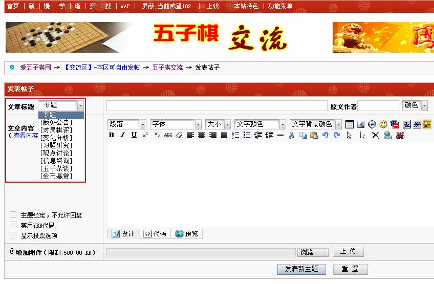

未添加专题分类的主题将予以惩罚
#1 <font color="red">未添加专题分类的主题将予以惩罚</font> 作者：屏蔽 发表时间：2011-10-9 11:05:10
2011年11月15日更新：提醒你们一个多月了，别怪俺。
=====================
主题专题分类可以方便大家快捷搜索相关的内容，同时使页面更加整洁。但目前，还有部分朋友未能习惯于应用这一功能。
事实上，“五子棋交流”版版规亦以强制性条款明确说明：
“第4条 本版内发表的主题应当添加合适的专题分类。非本版版主、超级版主、管理员不应使用‘版务公告’专题分类。”
在此，本版版务团队提出倡议，为您新发表的帖子增加适当的专题分类。如下图所示，只需轻轻点击两下鼠标即可完成：

本版目前下设可用分类8种，除“版务公告”为版务团队专用外，其他七个分类“对局棋评”、“变化分析”、“习题研究”、“观点讨论”、“信息咨询”、“五子杂谈”、“金币悬赏”均可在您发表主题时选择最合适的一类进行设置。
感谢您的配合！让我们共同携手创造一个更加整洁、方便、人性化的“五子棋交流”版块！
本帖锁定不做回复。如果您对此有任何意见或建议，欢迎通过论坛短信服务联系本版版主，或直接在本版版规主题内回帖留言。
［此帖子已被 屏蔽 在 2011-11-15 12:41:04 编辑过］